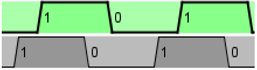

Тактовый генератор
Тактовый генератор
| Библиотека: | Монтаж |
| Введён в: | 2.0 Beta 13 (в библиотеке Базовые, перемещён в библиотеку Монтаж в 2.7.0) |
| Внешний вид: |
Поведение
Тактовый генератор переключает выходной сигнал с заданной периодичностью, пока в меню «Моделирование» включена опция Генерация тактов (по умолчанию отключена). «Такт» — базовая единица времени моделирования в Logisim; частоту следования тактов задают в подменю Тактовая частота того же меню.
Рабочий цикл тактового генератора можно настроить через атрибуты Длительность высокого уровня и Длительность низкого уровня.
В пошаговом режиме каждое нажатие клавиши выполняет ровно один такт.
Примечание. Моделирование тактирования в Logisim носит упрощённый характер. В реальных физических схемах несколько независимых генераторов неизбежно расходятся по фазе и не могут работать строго синфазно. В Logisim же все тактовые генераторы всегда работают строго синхронно, опираясь на единую частоту моделирования.
Контакты
Тактовый генератор имеет единственный контакт — однобитный выход, отражающий
текущее состояние генератора. Расположение контакта задаётся атрибутом
Направление.
Выходной сигнал переключается по расписанию, пока активна Генерация тактов,
а при щелчке Инструментом «Нажатие» — продвигается на один такт.
Атрибуты
Когда компонент выбран или добавляется, клавиши со стрелками меняют его атрибут Направление.
- Направление
- Сторона компонента, на которой расположен выходной контакт.
- Длительность высокого уровня
- Число тактов в каждом периоде, в течение которых выход удерживается в состоянии лог. 1.
- Длительность низкого уровня
- Число тактов в каждом периоде, в течение которых выход удерживается в состоянии лог. 0.
- Сдвиг фазы
-
Сдвиг фазы в тактах. Ниже показаны два одинаковых тактовых генератора, один из которых
(серого цвета) имеет фазовый сдвиг в 1 такт.

- Метка
- Текст подписи, отображаемой рядом с компонентом.
- Направление метки
- Расположение метки относительно компонента.
- Шрифт метки
- Шрифт, которым отображается подпись компонента.
Поведение Инструмента «Нажатие»
Щелчок по компоненту продвигает все тактовые генераторы схемы на один такт.
Назад к Справке по библиотеке